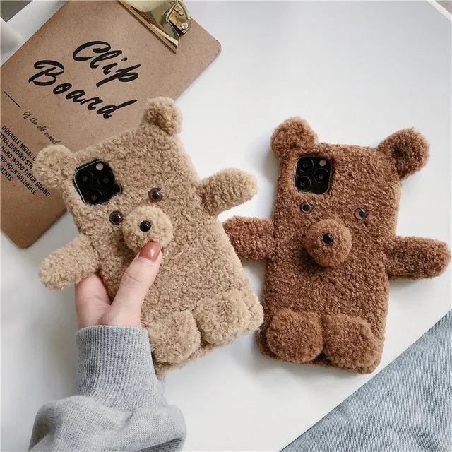

The transition from the analog world to the digital is rectangular.
Why is the web reduced to a rigid two-dimensional surface? Who decided that four edges determine a shape in which we perceive digital space? Obviously, the external factors determine the parameters of the web browser. An area framed by four sides, differs only in size variations, ranging from landscape to square to portrait, aka responsive web. The web is trapped in this construct. A prison of content, of design, of ideas. A space that restricts.
Bodies do not have only one shape and are not geometric at all!
Let's draw a comparison with Tupperware (i)
The web should be a painting, a sculpture, a performance, a world without boundaries. Web should be a biscuit roll.
Why is the web reduced to a rigid two-dimensional surface? Who decided that four edges determine a shape in which we perceive digital space? Obviously, the external factors determine the parameters of the web browser. An area framed by four sides, differs only in size variations, ranging from landscape to square to portrait, aka responsive web. The web is trapped in this construct. A prison of content, of design, of ideas. A space that restricts.
Bodies do not have only one shape and are not geometric at all!
Let's draw a comparison with Tupperware (i)
But first: Is Tupperware responsive?
The typical shape of a Tupperware is a rectangular box closed by a lid.
This concept is similar to that of the web browser. The difference between Tupperware and web browsers lies in their developments, which seems to be a bit more advanced in Tupperware.Starting from a boxy shape, Tupperware has expanded its range by now matching the shape of the packaging to the content.
It is questionable whether web browsers will ever undergo a similar transition. In the analog world, there are a few more examples of how a two-dimensional surface can be turned into a volume-filling body.Tent
biscuit roll
Smartphone cases 
and what about the pearphone from the TV series iCarly?
The web should be a painting, a sculpture, a performance, a world without boundaries. Web should be a biscuit roll.